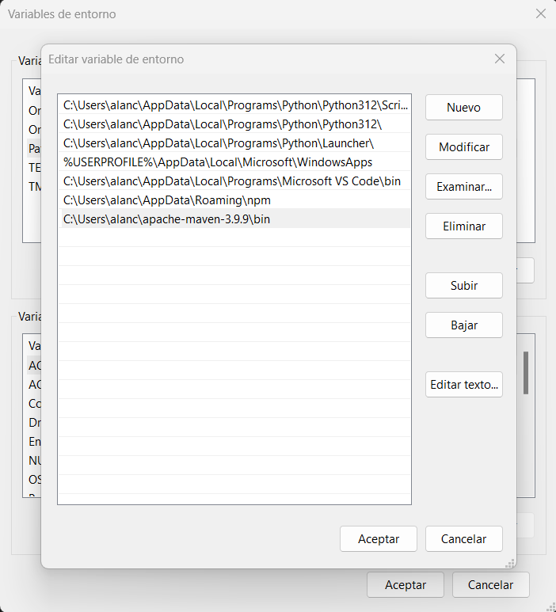

Benvinguts a la meva documentació
Creació d'un Projecte Maven amb VSCode
Introducció
Visual Studio Code (VSCode) ofereix una integració pràctica per treballar amb projectes Maven, permetent-nos crear projectes a partir d'arquetips i gestionar-los des de l'entorn gràfic.
Pas 1: Preparació
-
Obri Visual Studio Code i accedeix a una finestra nova:
Arxiu > Nova Finestra. -
Assegura't que tens instal·lat el plugin de Maven a VSCode. Si no el tens, instal·la'l des del Marketplace.
-
Añadiremos al editor de variables de entorno y en el Path añadiremos la ruta de apache Meaven que instalamos previamente

Pas 2: Creació del projecte Maven
-
A la barra lateral, localitza la pestanya MAVEN en l'activitat de l'Explorador.
-
Fes clic en el símbol "+" situat a la dreta de la pestanya MAVEN.
-
En la paleta d'ordes, selecciona l'arquetip maven-archetype-quickstart.
-
Defineix les propietats següents:
- Versió:
1.0 - GroupId:
com.alan.edd -
ArtifactId:
Calculadora -
VSCode obrirà automàticament la terminal integrada, on hauràs de confirmar o definir la propietat
version. Deixa el valor predeterminat1.0-SNAPSHOTi prem Intro. -
Finalitzat aquest procés, VSCode generarà l'estructura de carpetes i el fitxer
pom.xmldel projecte.
Pas 3: Revisió de l'Estructura del Projecte
Un cop creat el projecte, revisa l'estructura generada. La carpeta tindrà els següents elements:
src/main/java: Conté el fitxer base del projecte (p. ex., App.java).src/test/java: Conté els fitxers de proves.pom.xml: Fitxer de configuració del projecte.
Pas 4: Accions addicionals a VSCode
Mostrar el POM Efectiu
- A la pestanya MAVEN, fes clic dret sobre el projecte (Calculadora).
- Selecciona Show Effective POM.
- Es mostrarà un fitxer XML amb la combinació del Super POM i les propietats personalitzades.
Actualització de la Caché d'Arquetips
- Obre la paleta d'ordes amb
Ctrl + Shift + P. - Escriu Maven: Update Maven Archetype Catalog.
- Executa aquesta ordre per actualitzar els arquetips disponibles des del repositori central de Maven.